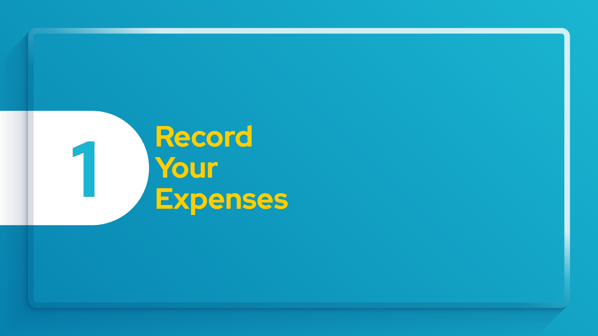
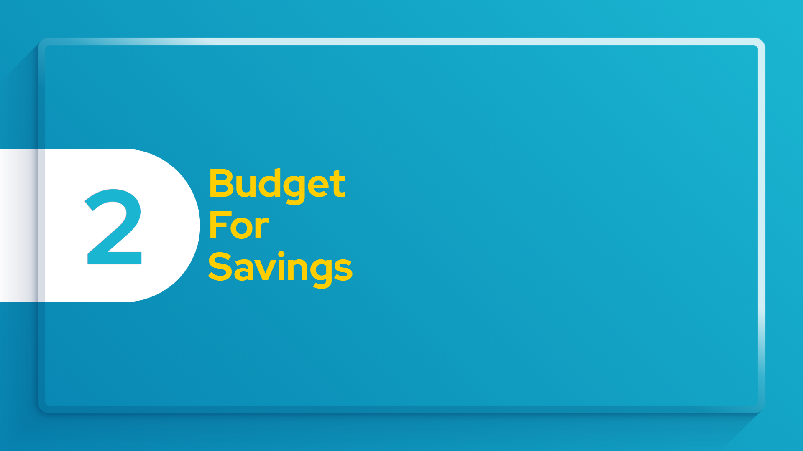
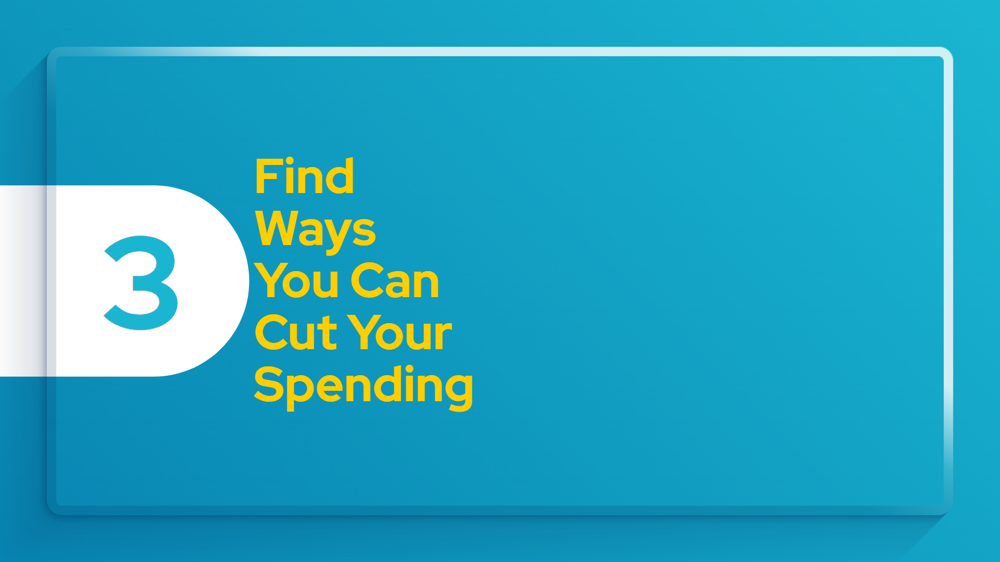
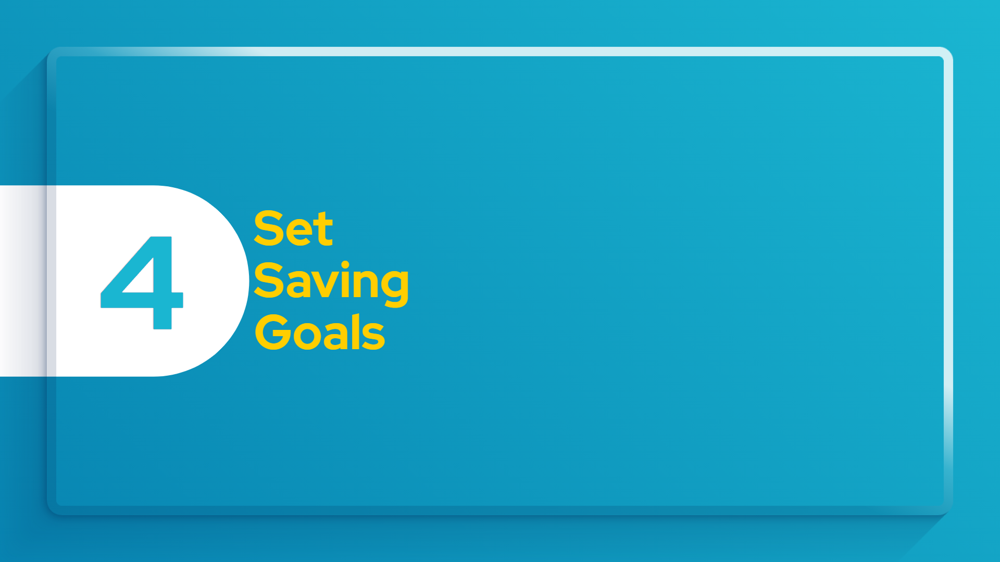
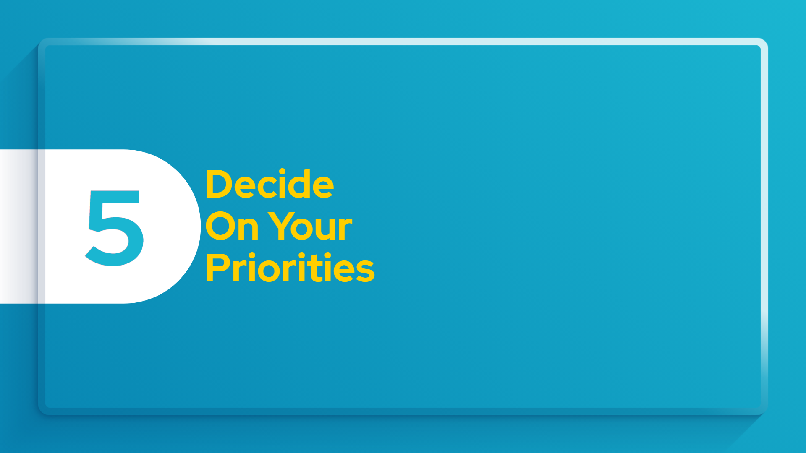
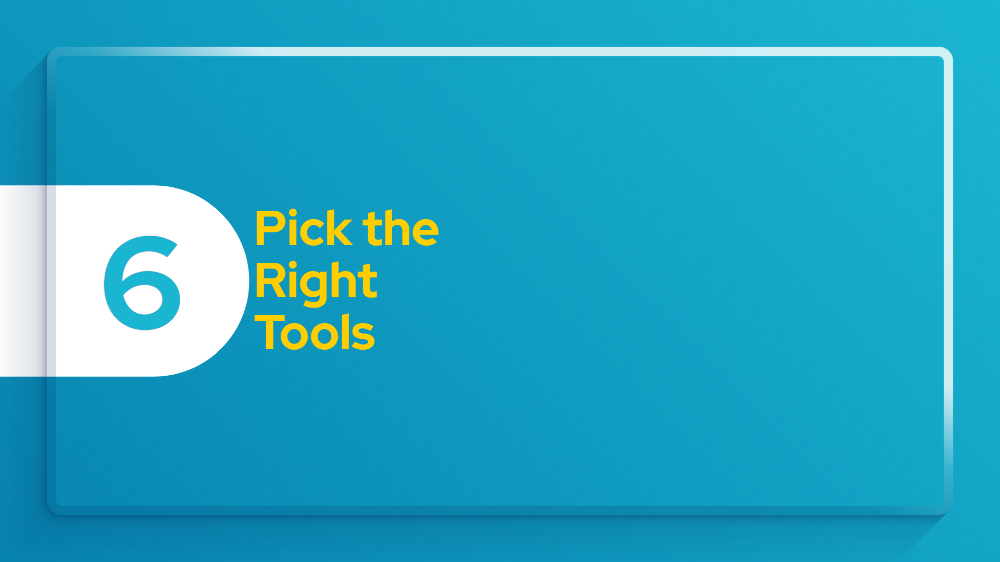
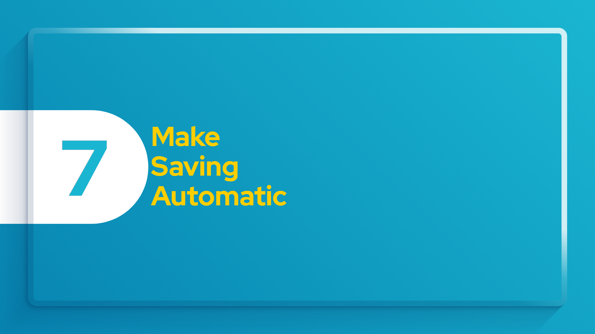

How to Start Saving Money?
Sometimes the hardest thing about saving money is just getting started. This step-by-step guide for how to save money can help you develop a simple and realistic strategy, so you can save for all your short- and long-term savings goals. These steps are from Better Money Habits.

Step 1
Previous
Next
Record Your Expenses
The first step to start saving money is to figure out how much you spend. Keep track of all your expenses—that means every coffee, household item and cash tip.
Once you have your data, organize the numbers by categories, such as gas, groceries and mortgage, and total each amount. Use your credit card and bank statements to make sure you’re accurate—and don’t forget any.
Tip: Look for a free spending tracker to help you get started. Choosing a digital program or app can help automate some of this work.

Step 2
Previous
Next
Budget For Savings
Once you have an idea of what you spend in a month, you can begin to organize your recorded expenses into a workable budget. Your budget should outline how your expenses measure up to your income—so you can plan your spending and limit overspending. Be sure to factor in expenses that occur regularly but not every month, such as car maintenance.
Tip: Include a savings category—aim to save 10 to 15 percent of your income.

Step 3
Previous
Next
Find Ways You Can Cut Your Spending
If your expenses are so high that you can’t save as much as you’d like, it might be time to cut back. Identify nonessentials that you can spend less on, such as entertainment and dining out. Look for ways to save on your fixed monthly expenses like television and your cell phone, too.
Here are some ideas for trimming everyday expenses:
- Use resources such as community event listings to find free or low-cost events to reduce entertainment spending.
- Cancel subscriptions and memberships you don’t use—especially if they renew automatically.
- Commit to eating out only once a month and trying places that fall into the “cheap eats” category.
- Give yourself a “cooling off period”: When tempted by a nonessential purchase, wait a few days. You may be glad you passed—or ready to save up for it.

Step 4
Previous
Next
Set Saving Goals
One of the best ways to save money is to set a goal. Start by thinking of what you might want to save for—perhaps you’re getting married, planning a vacation or saving for retirement. Then figure out how much money you’ll need and how long it might take you to save it.
Tip: Set a small, achievable short-term goal for something fun and big enough that you aren’t likely to have the cash on hand to pay for it, such as a new smartphone or holiday gifts. Reaching smaller goals—and enjoying the fun reward you’ve saved for—can give you a psychological boost that makes the payoff of saving more immediate and reinforces the habit.

Step 5
Previous
Next
Decide On Your Priorities
After your expenses and income, your goals are likely to have the biggest impact on how you allocate your savings. Be sure to remember long-term goals—it’s important that planning for retirement doesn’t take a back seat to shorter-term needs.
Tip: Learn how to prioritize your savings goals so you have a clear idea of where to start saving. For example, if you know you’re going to need to replace your car in the near future, you could start putting money away for one now.

Step 6
Previous
Next
Pick The Right Tools
If you’re saving for short-term goals, consider using these PDIC (Philippine Deposit Insurance Corporation)-insured deposit accounts:
- Savings account
- Certificate of deposit (CD), which locks in your money for a fixed period of time at a rate that is typically higher than savings accounts
For long-term goals consider:
- PDIC-insured individual retirement accounts (IRAs), which are tax-efficient savings accounts
- Securities, such as stocks or mutual funds. These investment products are available through investment accounts with a broker-dealer. Remember that securities are not insured by the PDIC, are not deposits or other obligations of a bank and are not guaranteed by a bank. They are subject to investment risks, including the possible loss of your principal.
Tip: You don’t have to pick just one account. Look carefully at all of your options and consider things like balance minimums, fees and interest rates so you can choose the mix that will help you best save for your goals.

Step 7
Previous
Next
Make Savings Automatic
Almost all banks offer automated transfers between your checking and savings accounts. You can choose when, how much and where to transfer money or even split your direct deposit so a portion of every paycheck goes directly into your savings account.
Tip: Splitting your direct deposit and setting up automated transfers are simple ways to save money since you don’t have to think about it, and it generally reduces the temptation to spend the money instead.
Step 8
Previous
Next
Watch Your Savings Grow
Review your budget and check your progress every month. Not only will this help you stick to your personal savings plan, but it also helps you identify and fix problems quickly. Understanding how to save money may even inspire you to find more ways to save and hit your goals faster.